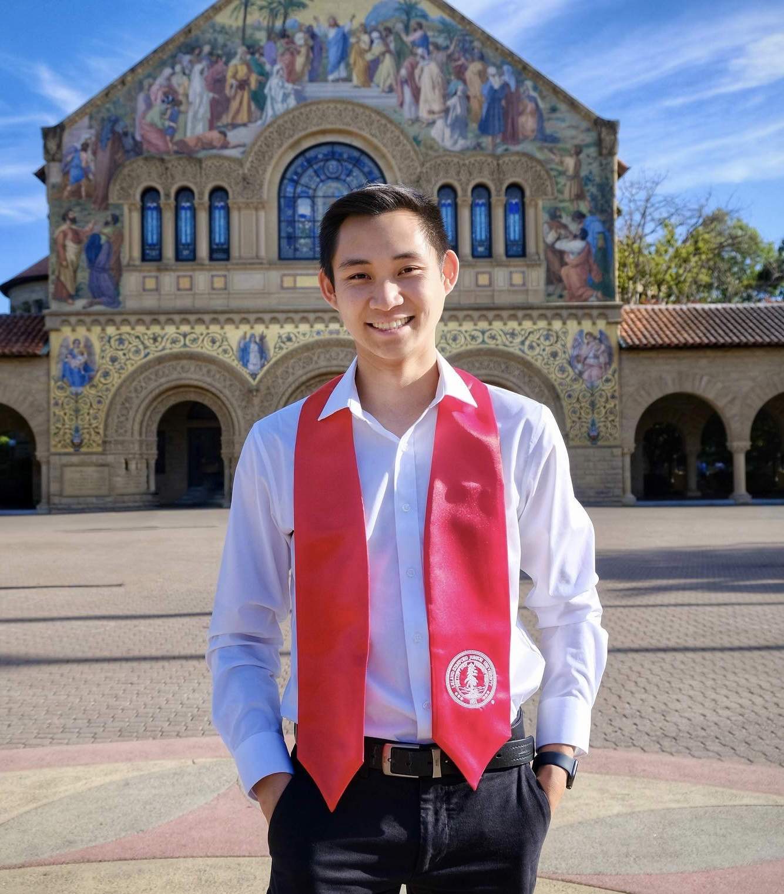

👋 Greetings! 你好! Aloha! What's poppin'?
My name is Raymond, and I'm a current graduate/coterm student at Stanford studying Computer Science
(Information Management and
Analytics concentration), with an expected graduation date of June 2023. I hail from the quaint town of Alameda,
CA in the East Bay Area, where I’ve lived all my life.
I recently graduated with my Bachelor's degree in Computer Science (AI concentration) and a minor in Symbolic
Systems at Stanford as well. I have broad interests across
distributed computing, databases, blockchain, big data, and AI.
In my free time, I enjoy playing tennis, taking pics with my Fuji,
playing guitar (or at least learning how to), working out, and finding weird things to buy on Amazon. Feel
free to reach out via email or LinkedIn!